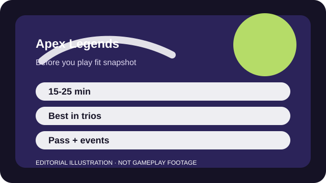

BEFORE YOU PLAY
What this page is and is not
This is a sourced editorial fit profile. It is designed to help with a yes-or-no play decision, and it does not claim a scored hands-on review.
Apex feels best when you like the rhythm of looting quickly, rotating with intent, and only taking the fights your squad can finish. If you mainly want nonstop arena action, the battle royale structure may feel slower than the movement suggests.
The first-session loop to judge is simple: Loot quickly, rotate with purpose, and combine squad abilities well enough to survive into the last circles.
Legend unlocks and account levels provide direction, yet mastery comes more from movement and rotation choices than raw grind.

FIT SNAPSHOT
Apex Legends at a glance
| Genre | Hero battle royale |
|---|---|
| Platforms | PC, PlayStation, Xbox, Switch |
| Business model | Free-to-play battle royale with cosmetic events and battle-pass monetization. |
| Typical session | 15-25 minute matches, with some extra setup time while learning maps and legends. |
| Play style | movement-heavy squad battle royale |
| Learning barrier | Apex is readable on the surface, but movement, legend synergy, and map pacing all matter sooner than they look. |
| Social shape | Playable solo, but the game feels much better when you have even one partner who pings well or uses voice calmly. |
WHO IT FITS
Best fit, likely friction, and the social reality
duos or trios who love movement, hero synergy, and endgame decision making
players who hate looting downtime or being reset by one rough early drop
Playable solo, but the game feels much better when you have even one partner who pings well or uses voice calmly.
Legend unlocks and account levels provide direction, yet mastery comes more from movement and rotation choices than raw grind.
FIRST SESSION PLAN
How to test the fit in one evening
- Choose one forgiving legend and resist swapping characters every death.
- Land at one quieter point of interest for several matches so loot decisions become predictable.
- Use the ping wheel constantly, even if you are not on voice chat.
- Try to reach late ring at least once before judging whether the overall pace works for you.
Use the first session to answer these fit questions instead of judging rank, win rate, or store value immediately.
- Do you enjoy learning one map and rotation pattern instead of pure aim duels?
- Do you want shooter speed plus hero kits rather than one or the other?
- Are you willing to lose some early fights while the loot pace starts making sense?
TIME, COST, AND COMMITMENT
What you are really signing up for
| Session budget | 15-25 minute matches, with some extra setup time while learning maps and legends. |
|---|---|
| Social demand | Playable solo, but the game feels much better when you have even one partner who pings well or uses voice calmly. |
| Progression shape | Legend unlocks and account levels provide direction, yet mastery comes more from movement and rotation choices than raw grind. |
| Spending pressure | Core access is free. Cosmetics, passes, and event items are the main monetized layers. |
The match length is manageable, but getting comfortable with maps and legend interactions takes more repetition than one evening reveals.
Core access is free. Cosmetics, passes, and event items are the main monetized layers.
SOURCES AND LIMITS
What was checked, and what can change
- Map rotation and limited-time modes change season to season.
- Legend balance can alter which team styles feel easiest for beginners.
- Cosmetic events and collection pricing move independently of the core fit.
This profile uses official game pages and defensible general product knowledge to frame the player fit. It does not claim live testing across every platform, accessibility need, or current event rotation.